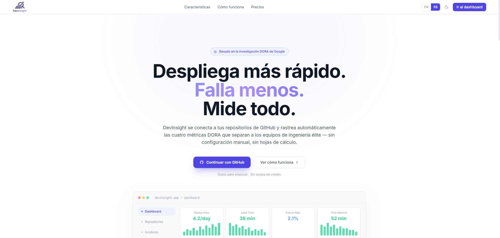

DevInsight — Métricas DORA
↗ Métricas DORA en tiempo real · Multi-tenant · Setup < 2 min

4 años enfocado en programación · 2a 8m en producción real. Stack: Laravel · React · MySQL.
Empecé a programar por curiosidad a los 17 años. Hoy, con casi 3 años de experiencia laboral real, construyo sistemas que resuelven problemas de negocio concretos.
Soy Fullstack Developer con TSU en Tecnologías de la Información (Entornos Virtuales y Negocios Digitales), actualmente cursando Ingeniería en la Universidad Tecnológica de Zinacantepec. He trabajado en producción para el sector médico privado y para el Gobierno del Estado de México, usando Laravel, React, MySQL y Docker.
Llevo 4 años enfocado en programación — los últimos 2 años 8 meses en entornos laborales reales. Eso me dio algo que los cursos no enseñan: entender cuándo no usar una tecnología y cómo tomar decisiones técnicas que el negocio pueda costear y mantener.
Laravel en backend, React en frontend, MySQL en producción. Mismo stack en empleo y proyectos propios.
OAuth 2.0, sanitización de inputs, Docker para ambientes reproducibles y flujos de pago con Stripe/PayPal.
De Laravel y Leaflet.js a Rust y Solana. Aprendo lo que el problema requiere, no solo lo que está de moda.
Busco tanto posición en equipo como proyectos por contrato. Me adapto al contexto y la necesidad.
Filtra por área · hover en cada tarjeta para ver dónde la usé en producción.
Haz clic en cada habilidad para ver el caso real detrás.
No solo código — problemas reales, decisiones técnicas justificadas y resultados medibles.

↗ Métricas DORA en tiempo real · Multi-tenant · Setup < 2 min

↗ 16+ estados · 4 pasarelas de pago · inscripciones 100% online

↗ 1,000+ SKUs online · clientes: Pemex, SEDENA, SAT
¿Quieres ver más trabajos?
Ver más proyectosPrincipios de seguridad en aplicaciones web, manejo de vulnerabilidades y mejores prácticas de defensa.
CompletadoFundamentos de ML aplicados a análisis de datos. Complementa proyectos con componentes predictivos en Python.
CompletadoServicios core de AWS: EC2, S3, RDS y arquitecturas en la nube para aplicaciones web escalables.
CompletadoÁrea Entornos Virtuales y Negocios Digitales — Universidad Tecnológica de Zinacantepec.
TituladoUniversidad Tecnológica de Zinacantepec — Continuación de formación en desarrollo de software y arquitectura de sistemas.
En cursoAbierto a empleo en equipo y proyectos freelance. Cuéntame qué necesitas — respondo en menos de 24 horas.